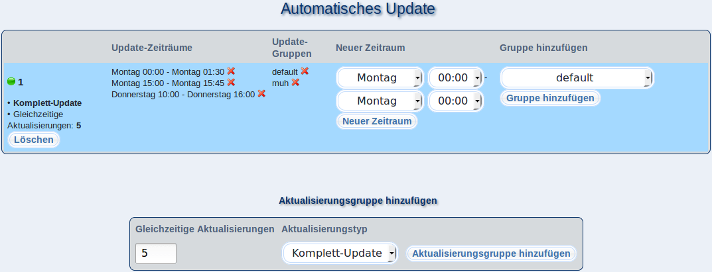

In diesem Dialog können Sie festlegen, zu welchen Zeiten Ihre m23-Clients automatisch aktualisiert werden sollen. Hierbei können Sie mehrere Clientgruppen zu einer Aktualisierungsgruppe zusammenfassen, deren Clients wiederkehrend an gewählten Wochentagen und zu festgelegten Uhrzeiten die Aktualisierungen durchführen. Die gerade aktive Gruppe wird durch eine grüne Kugel gekennzeichnet.
Unterabschnitte
root
2018-01-09